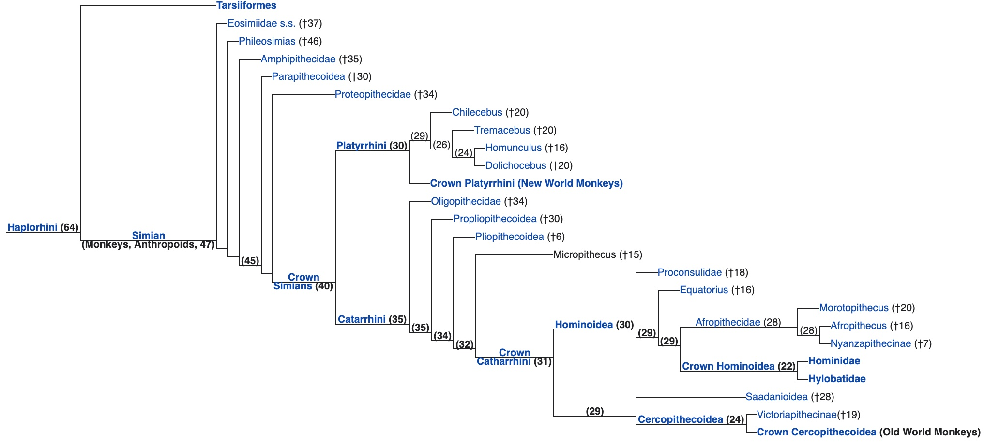

Monkey is a common name that may refer to most mammals of the infraorder Simiiformes, also known as the simians. Traditionally, all animals in the group now known as simians are counted as monkeys except the apes, which constitutes an incomplete paraphyletic grouping; however, in the broader sense based on cladistics, apes (Hominoidea) are also included, making the terms monkeys and simians synonyms in regards to their scope.
In 1812, Geoffroy grouped the apes and the Cercopithecidae group of monkeys together and established the name Catarrhini, "Old World monkeys", ("singes de l'Ancien Monde" in French). The extant sister of the Catarrhini in the monkey ("singes") group is the Platyrrhini (New World monkeys). Some nine million years before the bifurcation between the Cercopithecidae and the apes, the Platyrrhini emerged within "monkeys" by migration to South America from Afro-Arabia (the Old World), likely by ocean. The apes are thus deep in the tree of extant and extinct monkeys, and any of the apes is distinctly closer related to the Cercopithecidae than the Platyrrhini are.
Many monkey species are tree-dwelling (arboreal), although there are species that live primarily on the ground, such as baboons. Most species are mainly active during the day (diurnal). Monkeys are generally considered to be intelligent, especially the Old World monkeys.
Within suborder Haplorhini, the simians are a sister group to the tarsiers – the two members bifurcated some 60 million years ago. New World monkeys and catarrhine monkeys emerged within the simians roughly 35 million years ago. Old World monkeys and apes emerged within the catarrhine monkeys about 25 million years ago. Extinct basal simians such as Aegyptopithecus or Parapithecus (35–32 million years ago) are also considered monkeys by primatologists.
Lemurs, lorises, and galagos are not monkeys; instead they are strepsirrhine primates (suborder Strepsirrhini). The simians' sister group, the tarsiers, are also haplorhine primates; however, they are also not monkeys.
Apes emerged within "monkeys" as sister of the Cercopithecidae in the Catarrhini, so cladistically they are monkeys as well. There has been resistance to directly designate apes (and thus humans) as monkeys, so "Old World monkey" may be taken to mean either the Cercopithecoidea (not including apes) or the Catarrhini (including apes). That apes are monkeys was already realized by Georges-Louis Leclerc, Comte de Buffon in the 18th century. Linnaeus placed this group in 1758 together with the tarsiers, in a single genus "Simia" (sans Homo), an ensemble now recognised as the Haplorhini.
Monkeys, including apes, can be distinguished from other primates by having only two pectoral nipples, a pendulous penis, and a lack of sensory whiskers.
According to the Online Etymology Dictionary, the word "monkey" may originate in a German version of the Reynard the Fox fable, published circa 1580. In this version of the fable, a character named Moneke is the son of Martin the Ape. In English, no clear distinction was originally made between "ape" and "monkey"; thus the 1911 Encyclopædia Britannica entry for "ape" notes that it is either a synonym for "monkey" or is used to mean a tailless humanlike primate.[29] Colloquially, the terms "monkey" and "ape" are widely used interchangeably. Also, a few monkey species have the word "ape" in their common name, such as the Barbary ape.
Later in the first half of the 20th century, the idea developed that there were trends in primate evolution and that the living members of the order could be arranged in a series, leading through "monkeys" and "apes" to humans. Monkeys thus constituted a "grade" on the path to humans and were distinguished from "apes".
Scientific classifications are now more often based on monophyletic groups, that is groups consisting of all the descendants of a common ancestor. The New World monkeys and the Old World monkeys are each monophyletic groups, but their combination was not, since it excluded hominoids (apes and humans). Thus, the term "monkey" no longer referred to a recognized scientific taxon. The smallest accepted taxon which contains all the monkeys is the infraorder Simiiformes, or simians. However this also contains the hominoids, so that monkeys are, in terms of currently recognized taxa, non-hominoid simians. Colloquially and pop-culturally, the term is ambiguous and sometimes monkey includes non-human hominoids. In addition, frequent arguments are made for a monophyletic usage of the word "monkey" from the perspective that usage should reflect cladistics.
A group of monkeys may be commonly referred to as a tribe or a troop.
Two separate groups of primates are referred to as "monkeys": New World monkeys (platyrrhines) from South and Central America and Old World monkeys (catarrhines in the superfamily Cercopithecoidea) from Africa and Asia. Apes (hominoids)—consisting of gibbons, orangutans, gorillas, chimpanzees and bonobos, and humans—are also catarrhines but were classically distinguished from monkeys. Tailless monkeys may be called "apes", incorrectly according to modern usage; thus the tailless Barbary macaque is historically called the "Barbary ape".
Some characteristics are shared among the groups; most New World monkeys have long tails, with those in the Atelidae family being prehensile, while Old World monkeys have non-prehensile tails or no visible tail at all. Old World monkeys have trichromatic color vision like that of humans, while New World monkeys may be trichromatic, dichromatic, or—as in the owl monkeys and greater galagos—monochromatic. Although both the New and Old World monkeys, like the apes, have forward-facing eyes, the faces of Old World and New World monkeys look very different, though again, each group shares some features such as the types of noses, cheeks and rumps.
The following list shows where the various monkey families (bolded) are placed in the classification of living (extant) primates.
Below is a cladogram with some extinct monkey families. Generally, extinct non-hominoid simians, including early catarrhines are discussed as monkeys as well as simians or anthropoids, which cladistically means that Hominoidea are monkeys as well, restoring monkeys as a single grouping. It is indicated approximately how many million years ago (Mya) the clades diverged into newer clades. It is thought the New World monkeys started as a drifted "Old World monkey" group from the Old World (probably Africa) to the New World (South America).
The many species of monkey have varied relationships with humans. Some are kept as pets, others used as model organisms in laboratories or in space missions. They may be killed in monkey drives (when they threaten agriculture) or used as service animals for the disabled.
In some areas, some species of monkey are considered agricultural pests, and can cause extensive damage to commercial and subsistence crops. his can have important implications for the conservation of endangered species, which may be subject to persecution. In some instances farmers' perceptions of the damage may exceed the actual damage. Monkeys that have become habituated to human presence in tourist locations may also be considered pests, attacking tourists.
Some organizations train capuchin monkeys as service animals to assist quadriplegics and other people with severe spinal cord injuries or mobility impairments. After being socialized in a human home as infants, the monkeys undergo extensive training before being placed with disabled people. Around the house, the monkeys assist with daily tasks such as feeding, fetching, manipulating objects, and personal care.
Helper monkeys are usually trained in schools by private organizations, taking seven years to train, and are able to serve 25–30 years (two to three times longer than a guide dog).
In 2010, the U.S. federal government revised its definition of service animal under the Americans with Disabilities Act (ADA). Non-human primates are no longer recognized as service animals under the ADA. The American Veterinary Medical Association does not support the use of non-human primates as assistance animals because of animal welfare concerns, the potential for serious injury to people, and risks that primates may transfer dangerous diseases to humans.
The most common monkey species found in animal research are the grivet, the rhesus macaque, and the crab-eating macaque, which are either wild-caught or purpose-bred. They are used primarily because of their relative ease of handling, their fast reproductive cycle (compared to apes) and their psychological and physical similarity to humans. Worldwide, it is thought that between 100,000 and 200,000 non-human primates are used in research each year, 64.7% of which are Old World monkeys, and 5.5% New World monkeys. This number makes a very small fraction of all animals used in research. Between 1994 and 2004 the United States has used an average of 54,000 non-human primates, while around 10,000 non-human primates were used in the European Union in 2002.
A number of countries have used monkeys as part of their space exploration programmes, including the United States and France. The first monkey in space was Albert II, who flew in the US-launched V-2 rocket on June 14, 1949.
Monkey brains are eaten as a delicacy in parts of South Asia, Africa and China. Monkeys are sometimes eaten in parts of Africa, where they can be sold as "bushmeat". In traditional Islamic dietary laws, the eating of monkeys is forbidden.
Sun Wukong (the "Monkey King"), a character who figures prominently in Chinese mythology, is the protagonist in the classic comic Chinese novel Journey to the West.
Monkeys are prevalent in numerous books, television programs, and movies. The television series Monkey and the literary characters Monsieur Eek and Curious George are all examples.
nformally, "monkey" may refer to apes, particularly chimpanzees, gibbons, and gorillas. Author Terry Pratchett alludes to this difference in usage in his Discworld novels, in which the Librarian of the Unseen University is an orangutan who gets very violent if referred to as a monkey. Another example is the use of Simians in Chinese poetry.
The winged monkeys are prominent characters in L. Frank Baum's Wizard of Oz books and in the 1939 film based on Baum's 1900 novel The Wonderful Wizard of Oz.
Monkey is the symbol of fourth Tirthankara in Jainism, Abhinandananatha.
Hanuman, a prominent deity in Hinduism, is a human-like monkey god who is believed to bestow courage, strength and longevity to the person who thinks about him or Rama.
In Buddhism, the monkey is an early incarnation of Buddha but may also represent trickery and ugliness. The Chinese Buddhist "mind monkey" metaphor refers to the unsettled, restless state of human mind. Monkey is also one of the Three Senseless Creatures, symbolizing greed, with the tiger representing anger and the deer lovesickness.
The Sanzaru, or three wise monkeys, are revered in Japanese folklore; together they embody the proverbial principle to "see no evil, hear no evil, speak no evil".
The Moche people of ancient Peru worshipped nature. They placed emphasis on animals and often depicted monkeys in their art. The Tzeltal people of Mexico worshipped monkeys as incarnations of their dead ancestors.
The Monkey (猴) is the ninth in the twelve-year cycle of animals which appear in the Chinese zodiac related to the Chinese calendar. The next time that the monkey will appear as the zodiac sign will be in the year 2028.